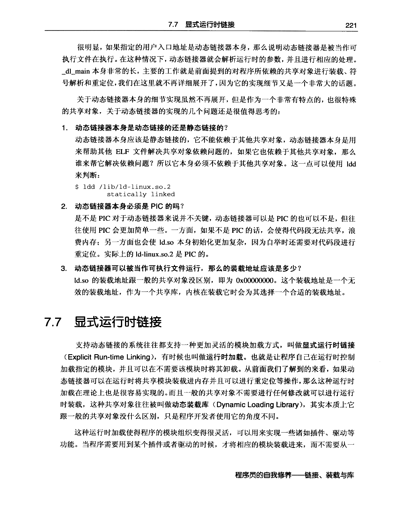
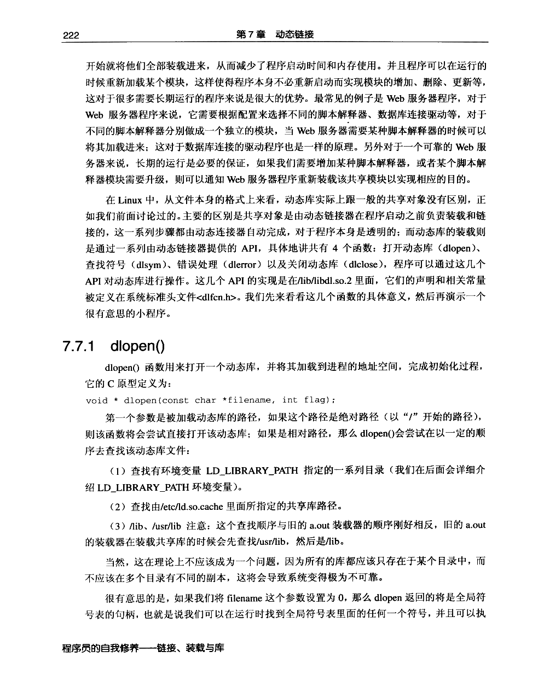
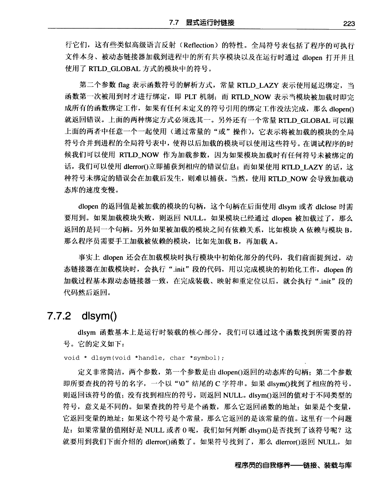
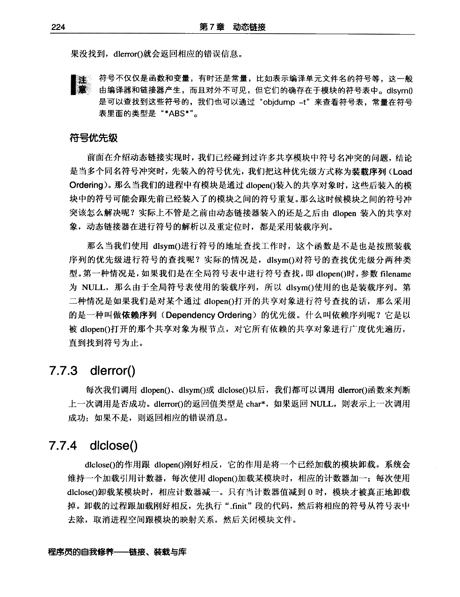
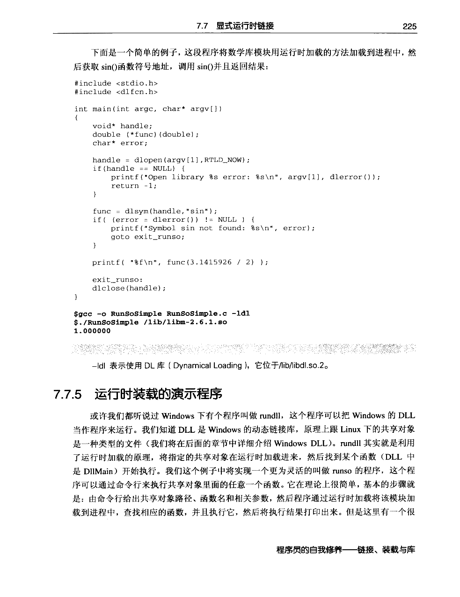
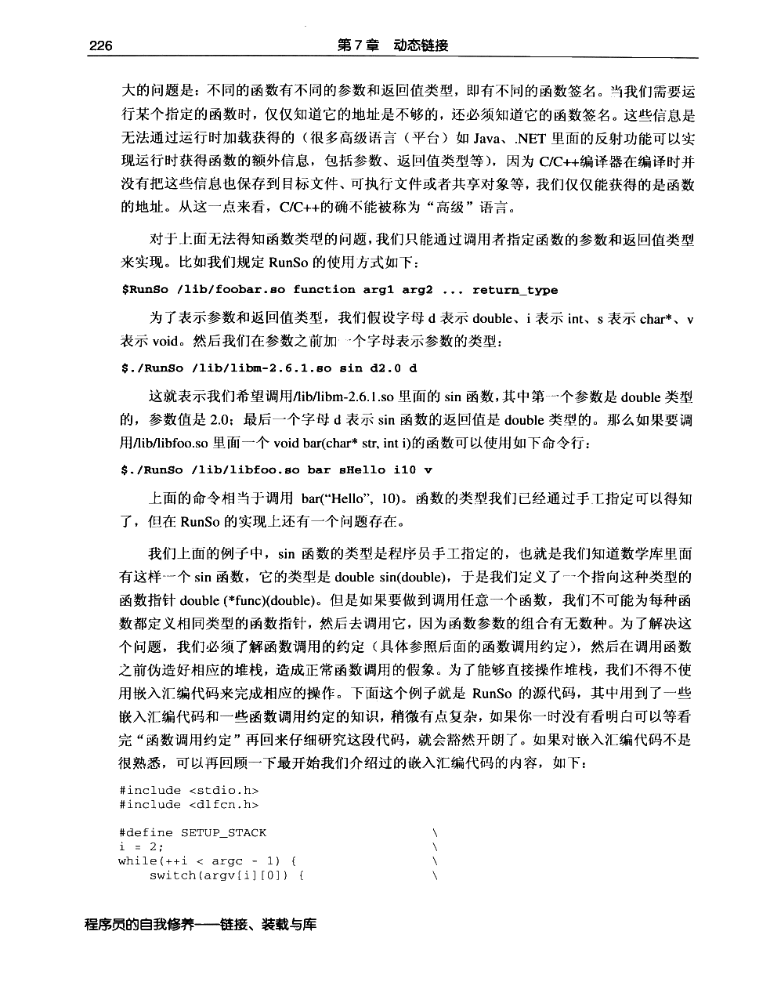
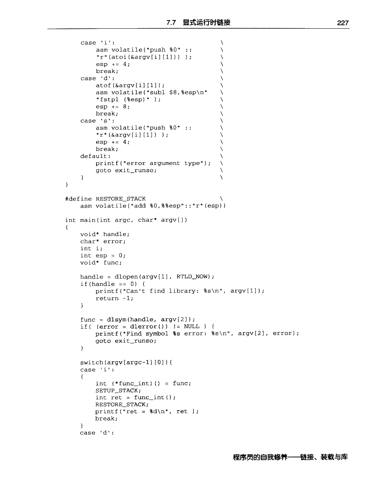
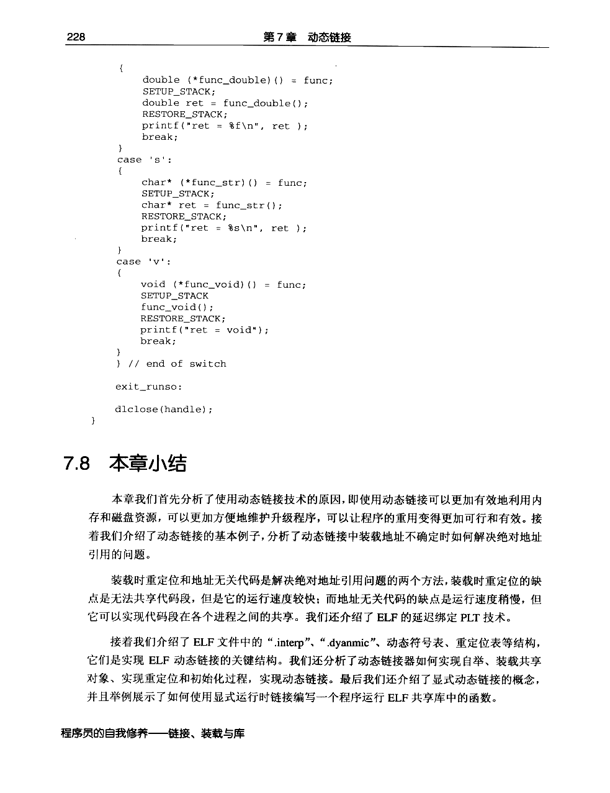

← 返回正文7.7 显式运行时链接
PDF 第 244 页 · 书内第 221 页
PDF 第 245 页 · 书内第 222 页
PDF 第 246 页 · 书内第 223 页
PDF 第 247 页 · 书内第 224 页
PDF 第 248 页 · 书内第 225 页
PDF 第 249 页 · 书内第 226 页
PDF 第 250 页 · 书内第 227 页
PDF 第 251 页 · 书内第 228 页